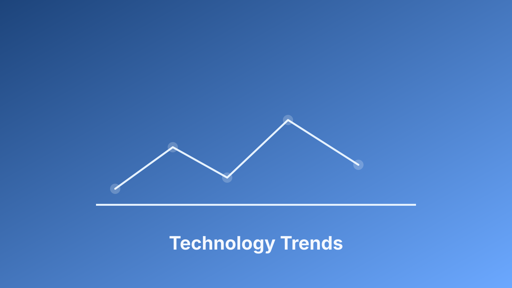

AI Is Expanding Both Attack and Defense Capability
AI is changing cybersecurity on both sides at once. Adversaries use automation to scale phishing, social engineering, and reconnaissance, while defenders use AI to improve alert triage, threat correlation, and response speed. The strategic challenge for leaders is balancing speed of adoption with control over risk.
Organizations that delay entirely may fall behind. Organizations that deploy without governance can create new exposure.
Governance Determines Whether AI Creates Value
Effective adoption starts with clear ownership, data boundaries, and measurable outcomes. The NIST AI Risk Management Framework is useful because it frames trustworthiness as an operational responsibility, not only a technical one.
I advise teams to pilot AI in focused workflows, review false-positive rates weekly, and keep human override authority for high-impact actions. That model enables innovation while preserving the accountability expected in cybersecurity leadership.
For executive leaders, the practical next step is to translate these ideas into a standing monthly operating review: one section for risk movement, one for remediation ownership, and one for measurable outcomes. This keeps technical work tied to business decisions and helps teams improve consistently rather than react episodically. Programs that use this rhythm usually see faster escalation, clearer accountability, and stronger trust across engineering, operations, and compliance stakeholders.